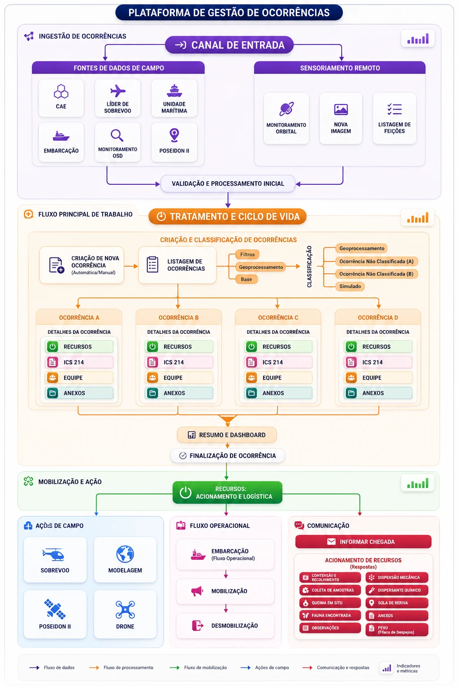

- Product Designer
- Henrico Amaral
- UX Researcher
- Karolinne Santos
- Empresa
- Mirante Tecnologia
- Cliente
- Petrobras
- Período
- Abril 2023 — Março 2024
- Duração
- 12 meses
- Tipo
- Plataforma interna de monitoramento ambiental
- Plataforma
- Web · Desktop operacional
- Escopo
- Discovery · Arquitetura da informação · UX/UI · Prototipação
Neste projeto, o design tratou a ocorrência como unidade de trabalho entre monitoramento, classificação, mobilização, resposta e encerramento.
O que é operar ambientalmente offshore.
Operações de petróleo offshore estão sujeitas a regulações ambientais federais que exigem monitoramento contínuo, registro de ocorrências e capacidade de resposta documentada.
O registro atravessava Geoprocessamento/OSD, CAR, Apoio Operacional, LES e Gestão, com responsabilidades diferentes ao longo da resposta.
Sete canais independentes podiam originar uma ocorrência ambiental.
Antes do sistema, cada etapa era registrada isoladamente.
Quando o oceano joga uma mancha no seu radar, não dá tempo de cruzar planilha com PDF. O fluxo legado dependia exatamente disso.
Esses registros não compartilhavam a mesma estrutura operacional. A reconstrução do contexto ficava distribuída entre arquivos, sistemas e pessoas.
Antes · Fragmentação
Planilhas locais de recursosRelatórios técnicos em PDFControle cronológico manualSistemas de geoprocessamentoRegistros paralelosDepois · Visão única
O custo estava em montar o contexto operacional.
A operação já produzia informação suficiente; o problema era reuni-la no momento da decisão.
O desenho precisava reduzir a dependência de registros repetidos e tornar visíveis classificação, responsabilidade, mobilização e encerramento.
O gargalo estava na energia gasta para cruzar dados dispersos sob pressão de tempo.
O campo revelou que a ocorrência precisava ser tratada como um caso contínuo.
A investigação em campo e o mapeamento dos fluxos mostraram que a resposta dependia de contexto compartilhado, permissões claras e uma sequência comum de evidências. Parte dos perfis e integrações ainda dependia de definição e aprovação.
Discovery no CENPES
Observar a operação em campo e mapear o contexto real de resposta.
Entrevistas e cocriação
Cruzar entrevistas, observação, cocriação e validação com as equipes envolvidas.
Papéis e permissões
Organizar Gestão/Admin, Geoprocessamento/OSD, CAR, Apoio Operacional e LES.
Estados e exceções
Mapear registro, classificação, mobilização, resposta, pendência e encerramento.
SLAs regionais
Tratar prazos de resposta e diferenças regionais como restrições de produto.
Linhagem da informação
Conectar sinal, geoprocessamento, classificação, ocorrência, mobilização, evidências, ICS 214, consolidação e gestão/regulador.
A ocorrência como elemento estruturador do fluxo.
Propusemos reorganizar o sistema usando a ocorrência como unidade central do fluxo de trabalho. O modelo conecta monitoramento, geoprocessamento, mobilização, resposta, cronologia e encerramento, mantendo explícitos os fluxos que continuavam externos.
Nem tudo pôde ser integrado de imediato.
Limitações técnicas e regulações exigiram manter alguns fluxos temporariamente externos ou dependentes de processos manuais. Integrações com sensores satelitais herdados permaneceram em canais paralelos e o fechamento formal do relatório regulatório ainda exigia formulários no ambiente governamental.
Aderência ao fluxo real
Refletir a operação real e exigências regulatórias.
Rastreabilidade
Toda ação e mudança de estado precisava gerar registro auditável.
Colaboração
Equipes offshore e analistas em terra precisavam cooperar sobre o mesmo evento.
Uso sob pressão
Registrar dados precisava ser mais simples que preencher planilhas.
Telas, fluxos e interações integradas.
Transformamos o fluxo de trabalho em interfaces modulares, integrando cronologia de resposta, geoprocessamento e painéis de coordenação. Cada prancha abaixo documenta um módulo do sistema.





Plataforma de gestão de ocorrências.
O ecossistema foi reorganizado em quatro faixas operacionais: ingestão, validação, ciclo de vida e mobilização/resposta.
Ingestão
Sinais de satélite, OSD, Poseidon II, sobrevoo LES e unidades marítimas entram como possíveis origens de ocorrência.
Validação
Geoprocessamento, classificação e origem do registro confirmam se o sinal vira ocorrência operacional.
Ciclo de vida
A ocorrência concentra estados, cronologia ICS 214, responsáveis, evidências e documentação formal.
Mobilização e resposta
Recursos, embarcações, comunicação e encerramento passam a operar como partes da mesma trilha rastreável.
Impacto documentado: menos reconstrução, mais continuidade operacional.
O impacto mais forte não é cosmético. A plataforma transforma uma ocorrência ambiental em uma trilha operacional verificável: detecção, análise geoespacial, mobilização, ICS 214, consolidação e encerramento.
A documentação consolidada registra aproximadamente 95% de automação na consolidação documental associada às ocorrências.
O material de OSD documenta radar em sete plataformas, dando escala concreta ao canal de monitoramento offshore.
A cronologia da ocorrência, mobilização e tempos de resposta passam a ser registrados como evidência operacional.
Sinais, análises, recursos e documentação deixam de aparecer como registros paralelos e passam a compor a mesma ocorrência.
Antes de desenhar a tela, é preciso modelar a operação.
O maior aprendizado foi modelar entidades, estados e responsabilidades antes de decidir como cada tela deveria funcionar. No SALA CAR, o design conectou sinais, estados e responsabilidades ao redor da ocorrência, sem apagar os sistemas externos do fluxo.